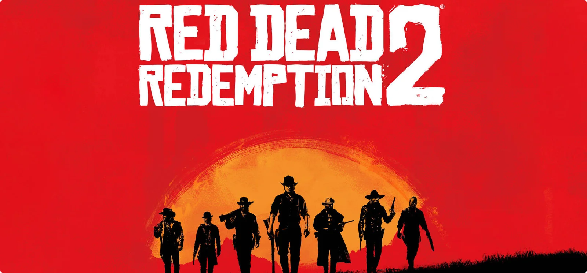
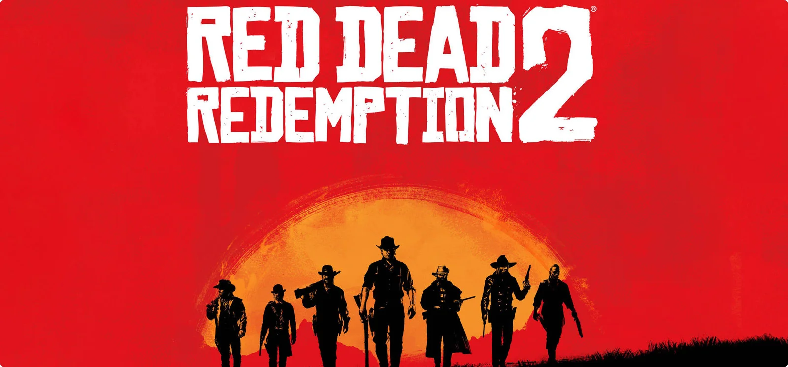
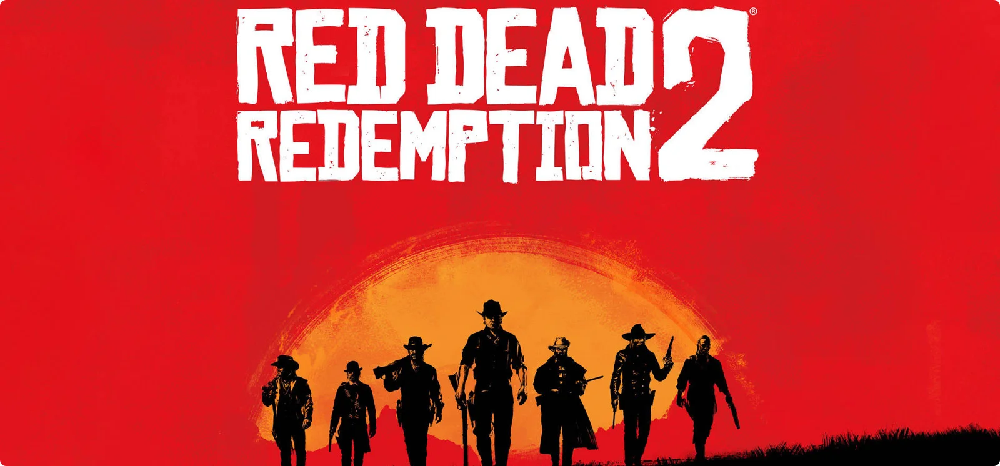

.jpg)
 
Red Dead Redemption 2 (estilizado Red Dead Redemption II) é um jogo eletrônico de ação-aventura desenvolvido e publicado pela Rockstar Games. É o terceiro título da série Red Dead e uma prequela de Red Dead Redemption, tendo sido lançado em outubro de 2018 para PlayStation 4 e Xbox One e em novembro de 2019 para Microsoft Windows e Google Stadia. A história se passa em 1899 em uma representação ficcional do oeste, meio-oeste e sul dos Estados Unidos e acompanha o fora da lei Arthur Morgan, que precisa lidar com o declínio do Velho Oeste e sobreviver à perseguição de forças governamentais, gangues rivais e outros adversários.
A jogabilidade é apresentada tanto em uma perspectiva em primeira quanto em terceira pessoa, com o jogador sendo livre para explorar e interagir com o mundo aberto. Elementos de jogabilidade incluem tiroteios, assaltos, caça, cavalgadas, interação com personagens não jogáveis e gerenciamento da honra do protagonista por meio de escolhas morais e atos. Um sistema de recompensa similar àquele presente na série Grand Theft Auto governa as respostas da polícia e caçadores de recompensa aos crimes cometidos pelo jogador. Um modo multijogador chamado de Red Dead Online estreou em novembro de 2018.
